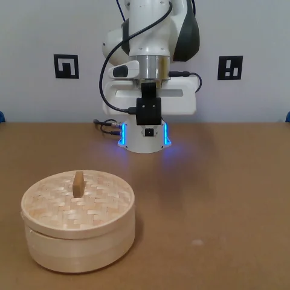
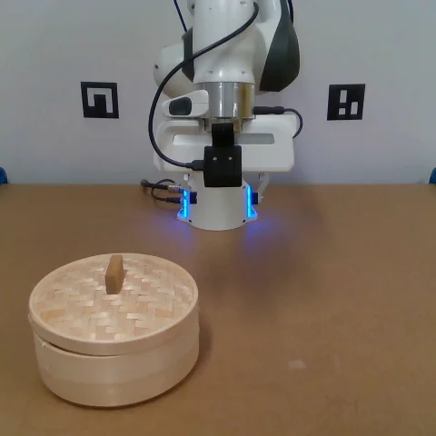
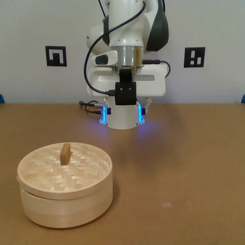
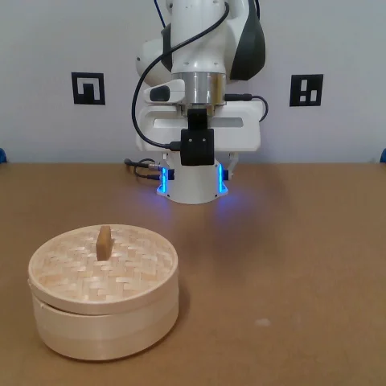
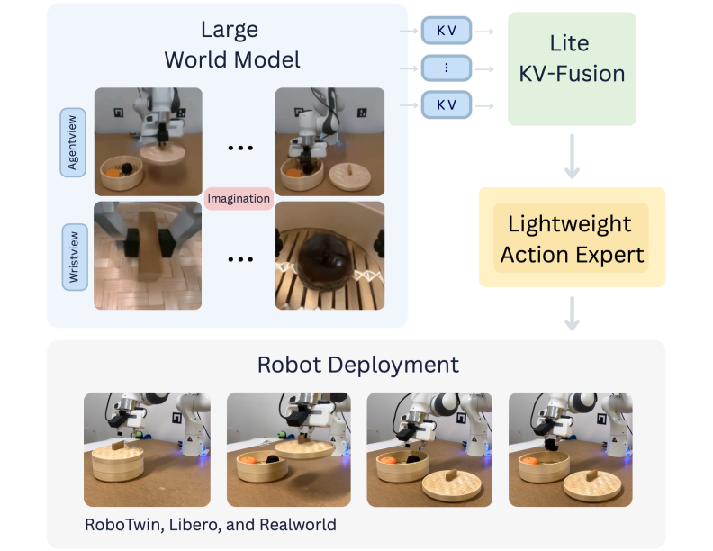
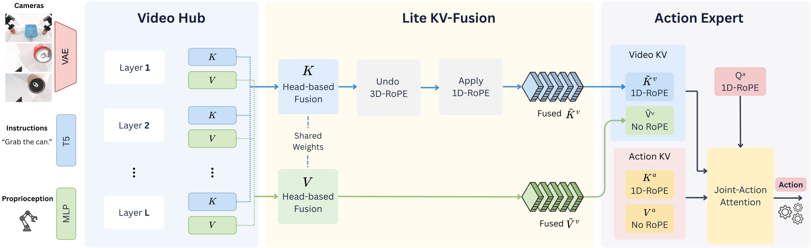

Lite KV-Fusion.
Lite KV-Fusion learns head-specific mixtures of native keys and values across all video layers. It adds just 720 trainable parameters and avoids dense KV reprojection.
World Action Models (WAMs) benefit from representations learned by pretrained video models, but deep action modules incur high inference latency that limits their practicality in real-world robot control. Faster-WAM concentrates capacity in the video backbone and uses a single-layer action expert, connected to all video layers through Lite KV-Fusion, with world-model-only conditioning and retracted 1D-RoPE. Without additional embodied pretraining, it achieves competitive control performance on LIBERO and RoboTwin 2.0 and 78.3% success on LIBERO-Plus. It provides a 3.7–3.8× inference speedup over Fast-WAM in controlled profiling and reduces online inference latency from 502 to 129 ms on the real-robot deployment workstation. Across four Franka Panda tasks, it retains comparable success with shorter mean completion times than Fast-WAM. By reducing the delay between observation and action prediction, low-latency inference makes world-model-based control more responsive and practical for real-world deployment.
The recordings below compare execution of the same instruction: “Lift the lid, put it aside, and pick the black plum.” Play at 1× or 2× speed, or drag the slider to compare the policies at the same elapsed wall-clock time.

In progressRecorded at 0 s

In progressRecorded at 0 s

In progressRecorded at 0 s

In progressRecorded at 0 s
Illustrative rollouts from Appendix G, not mean completion times. The timeline uses a uniform seconds scale, including pauses between movements. Still images are sampled every 5 s with an additional sample at 21 s. The original frame export supplies the extra snapshots omitted from the paper’s figure; each remains visible until the next recorded snapshot. Playback speed applies equally to all four policies. Completion is marked at the reported times (21.2, 21.6, 38.5, and 139.9 s), after which the final recorded frame is held. Across the four tasks, π0.5 has shorter mean completion times than Faster-WAM.
Four tasks, 100 demonstrations per task. Faster-WAM achieves 81.3% average success, compared with 80.0% for Fast-WAM.
Faster-WAM inference
Fast-WAM inference
Speedup on the deployment workstation
Measured over successful rollouts on the deployment workstation; these absolute latencies should not be compared directly with the controlled benchmark below. Faster-WAM has shorter mean completion times than the evaluated WAM baselines on all four tasks. π0.5 has the highest measured average success (86.3%) and the shortest mean completion times. See the complete real-robot results ↗
These results suggest that better use of pretrained world-model representations can support efficient, generalizable control with little action-specific computation.
The results show that competitive control does not necessarily require a deep action expert; they do not establish that one layer is optimal. Physical evaluation covers one robot platform and four manipulation tasks. Additional embodied pretraining and broader evaluations across embodiments remain open directions.
Faster-WAM uses a single-layer, 28.6M-parameter action expert with access to all 30 layers of the video backbone. Three design choices make this possible: Dock of Transformers (DoT) with Lite KV-Fusion, world-model-only conditioning, and retracted 1D-RoPE for positional alignment between video keys and action queries.


Lite KV-Fusion learns head-specific mixtures of native keys and values across all video layers. It adds just 720 trainable parameters and avoids dense KV reprojection.
Language and proprioception enter the video backbone. The action expert receives this context only through the fused video representations.
Retracted 1D-RoPE removes the video keys’ original 3D rotation and re-encodes them on the action queries’ temporal axis and frequency grid.
The video backbone is evaluated once per observation. Its fused KV cache is then reused across the action expert’s ten denoising steps.
Faster-WAM retains strong control performance without additional embodied pretraining, while reducing the computation required to predict an action chunk.
RoboTwin 2.0 · model computation per action chunk
faster than Fast-WAM
90.5 ± 0.2%average success on RoboTwin 2.0
Measured on the same 24 GiB consumer GPU, at batch size one. Totals include text and vision encoding, multimodal conditioning, and action generation; they exclude external input preparation, transfers, and robot execution. Fast-WAM totals combine separately measured components because the full pipeline exceeds GPU memory.
Fast-WAM and Faster-WAM both predict 32-action chunks with 10 action denoising steps. π0.5 uses its native configuration (50 actions on RoboTwin; 10 on LIBERO). Thus, the WAM comparison matches action-generation settings; the VLA comparison does not match chunk length. Full profiling protocol ↗
| Model | Additional embodied pretraining |
LIBERO | RoboTwin 2.0 | LIBERO-Plus |
|---|---|---|---|---|
| π0.5 | Yes | 96.9 | 79.8 | 85.7 |
| LingBot-VA | Yes | 98.5 | 92.2 | 69.5 |
| Fast-WAM | No | 97.6 | 91.8 | 51.5 |
| Faster-WAM | No | 98.3 ± 0.1 | 90.5 ± 0.2 | 78.3 ± 0.1 |
Faster-WAM: mean ± standard deviation over three evaluation runs. Baseline success rates are taken from the sources cited in Tables 1–3 of the paper; selected comparisons are not an exhaustive ranking.
The LIBERO-trained policy transfers to LIBERO-Plus without additional training or data augmentation.
overall success vs. Fast-WAM
Faster-WAM improves over Fast-WAM across all seven perturbation categories. Both use the Wan2.2-5B video backbone without additional embodied pretraining. Values from Table 3.
@misc{ma2026fasterwam,
title = {Faster-WAM: Do World Action Models Need Deep Action Modules?},
author = {Liheng Ma and Rui Heng Yang and Amin Abyaneh and
George Z. Xue and Behnam Rahmati and Mateo Clemente and
Ziwen Hu and Anlin Chen and Tongtong Cao and
Zhanguang Zhang and Yingxue Zhang},
year = {2026},
eprint = {2608.02365},
archivePrefix = {arXiv},
primaryClass = {cs.AI},
url = {https://arxiv.org/abs/2608.02365}
}